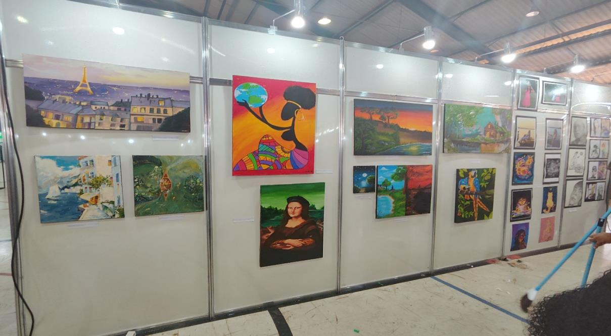
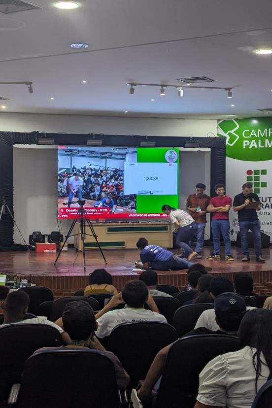
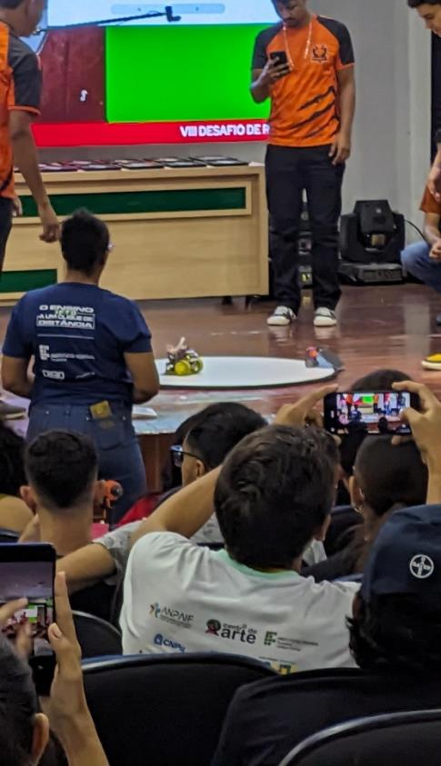
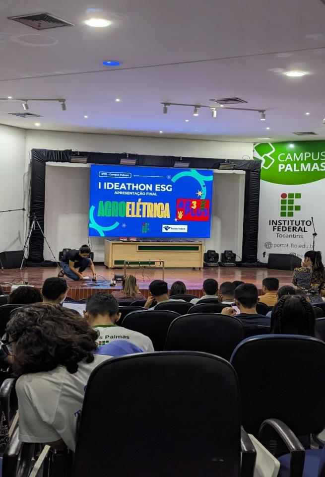
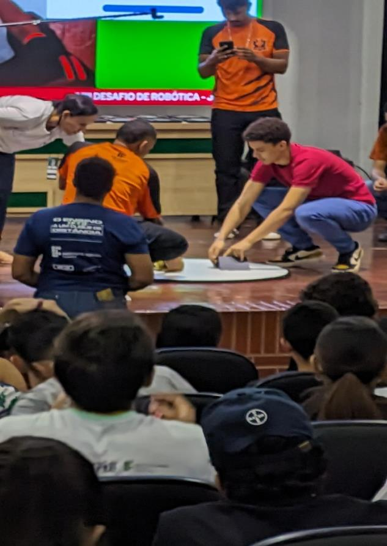
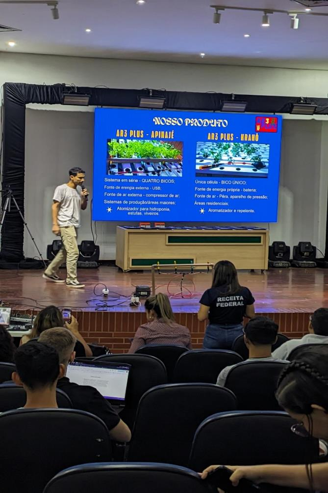
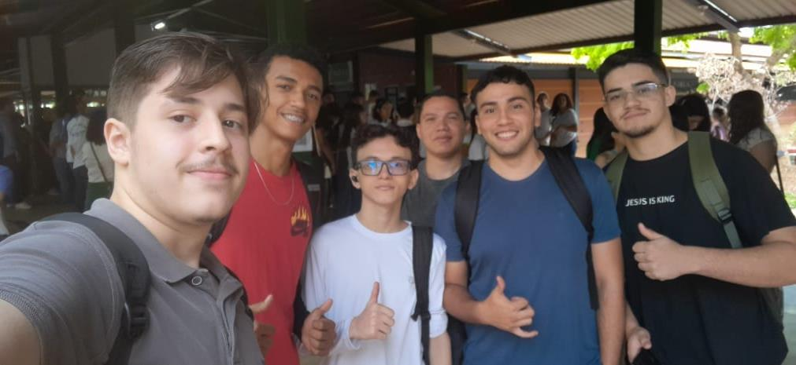
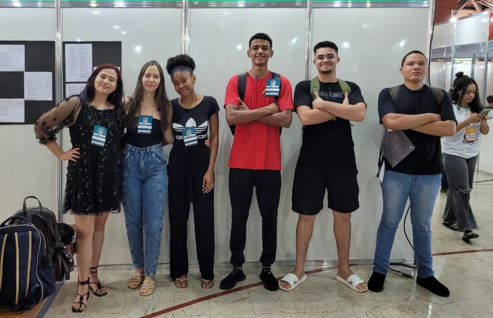

Nos dias 16, 17 e 18 de outubro, no campus
Palmas, ocorreu o JICE e Identidade
IFTO. O Identidade IFTO é um evento anual que destaca os serviços oferecidos pelo
Instituto Federal do Tocantins. Durante o evento, são apresentados projetos e ações
que envolvem áreas como pesquisa, extensão, inovação, arte e cultura, diversidade e
ensino. Além disso, o evento também aborda questões relacionadas à assistência
estudantil, desafios científicos, rotinas administrativas e gestão de pessoas. Ademais,
o evento fortalece a presença do Instituto Federal na comunidade tocantinense,
mostrando seu impacto e integração com a sociedade.
Durante o evento, participei de duas atividades, mas
também tive a oportunidade
de observar diversos trabalhos acadêmicos de pôsteres. Um dos projetos que mais
me chamou a atenção foi o trabalho de integração dos estudantes surdos do campus
Colinas do Tocantins com a comunidade acadêmica geral, utilizando tecnologias
educacionais. Essa iniciativa demonstra um esforço significativo para promover a
inclusão e a acessibilidade no ambiente acadêmico.
Ainda no primeiro dia, houve uma exposição de artes que demonstraram pinturas e retratos feitos pelos próprios alunos. Essa atividade ocorreu no ginásio da unidade de ensino proporcionando espaço suficiente para todos pudessem apreciar com clareza a criatividade e o talento dos mesmos.
A obra que mais me chamou a atenção foi a pintura “Navegando” de Wanessa de Lira Tavares do campus de Araguatins.
Inicialmente, o que mais chamou minha atenção na pintura foi a água cristalina, que
me fez imaginar que os pescadores vivem em uma pequena e tranquila vila do interior,
em um mundo que um dia já foi semelhante ao que vivemos. A antiga estátua,
destruída, parece representar o patamar que a humanidade daquela realidade
alcançou.
Embora não entenda muito sobre técnicas de pintura, acredito que a técnica da
autora transmite a ideia de que existem setas imaginárias que correm junto com o
fluxo do rio, apontando para a canoa e os pescadores, o que foi uma escolha muito
inteligente.
A obra me tocou, pois reflete sobre o que pode acontecer com o nosso mundo
atualmente, diante das guerras e ameaças entre países, impulsionadas pelo egoísmo
e ganância de seus líderes, e o que isso pode significar: ruínas do que a humanidade
já construiu.
Por fim, a exposição sofreu com a falta dos autores, impossibilitando a explicação
e a verdadeira intenção do artista em relação à obra. No próximo ID. IFTO, a presença
de pelo menos alguns alunos que saibam a intenção e o objetivo dos autores com
suas artes seria algo essencial para que o público entenda as obras expostas. Além
disso, a interação direta entre os artistas e os visitantes poderia enriquecer a
experiência, permitindo um diálogo mais profundo sobre as inspirações, processos
criativos e significados das obras.
No dia 18, consegui assistir à final do campeonato de robótica, que aconteceu no auditório central. Embora tenha chegado apenas no final do evento, consegui registrar algumas fotos:
  Além do campeonato de robótica, o auditório
central foi o local das finais do
Ideathon, que é uma competição educacional focada em empreendedorismo e
inovação tecnológica. O evento conta com a presença de alunos de qualquer campus
do estado onde eles desenvolvem ideias e criam protótipos com o objetivo de criar
soluções para problemas que afetam o mundo e essas propostas são avaliadas por
representantes de uma banca que fazem perguntas aos participantes. Os alunos,
portanto, defendem suas ideias e recebem um feedback valioso sobre seus projetos.
Durante o evento foram apresentados muitos projetos mas consegui ver somente
os três últimos. Todos os projetos foram muito interessante mas o que vou citar aqui
foi se chamado deltalizador. O projeto tem a finalidade de ser um mini nebulizador
criado a partir das partes do vape. O projeto se destacou por ser barato e ter a
possibilidade de ser desenvolvimento em grande escala por ongs e ser distribuído
para pessoas com baixa renda e não tem a possibilidade de comprar o aparelho.
De todos os projetos apresentados acredito que esse foi o que chamou mais
atenção pois mesmos após o final da apresentação a representante foi chamada pelos
jurados para falar mais sobre o projeto. Infelizmente não pude ficar até o final da
competição então não soube quem foi o vencedor.
Representantes da equipe delta.
Em conclusão, o JICE e Identidade IFTO 2024
foi um evento que, no início,
enfrentou diversos problemas, como a má ventilação no ginásio, várias quedas de
energia no primeiro dia, falta de lixeiras, e o fato de que, no espaço Cajuí, poderiam
ter colocado mais tendas para evitar que os estudantes aguardassem na fila sob o
Sol. Além disso, a falta de divulgação sobre o credenciamento causou certa confusão.
Porém, apesar desses contratempos, o evento seguiu bem ao longo dos dias
seguintes e acabou sendo divertido.
Abaixo, seguem algumas fotos do evento:    